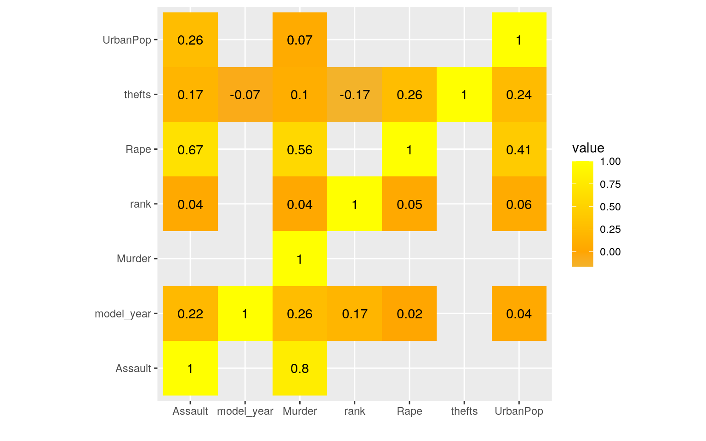
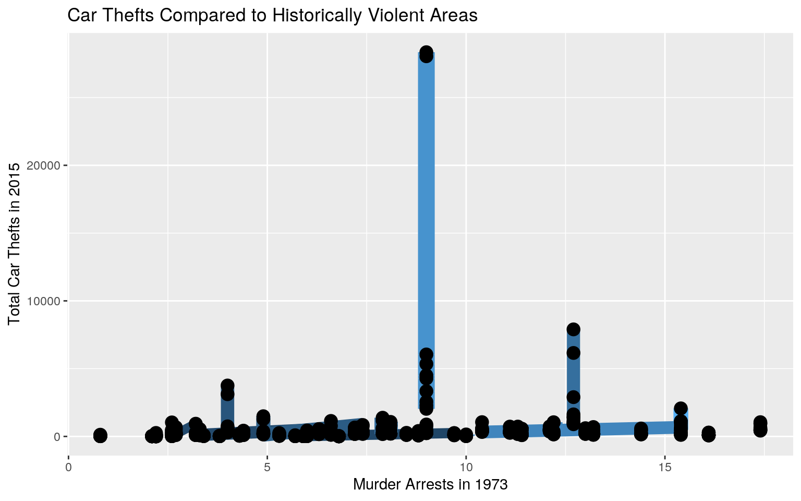
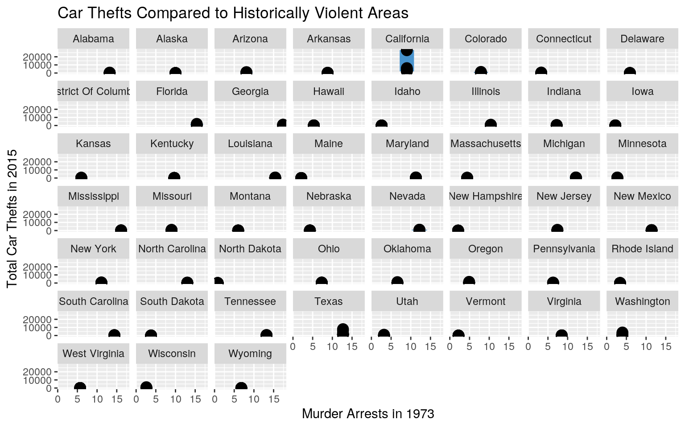
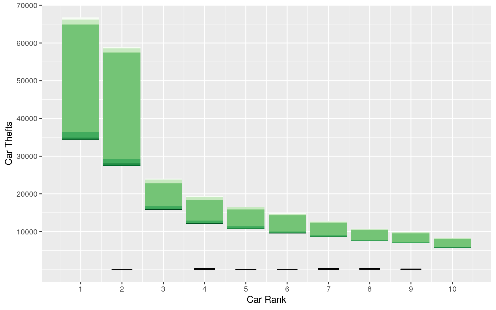
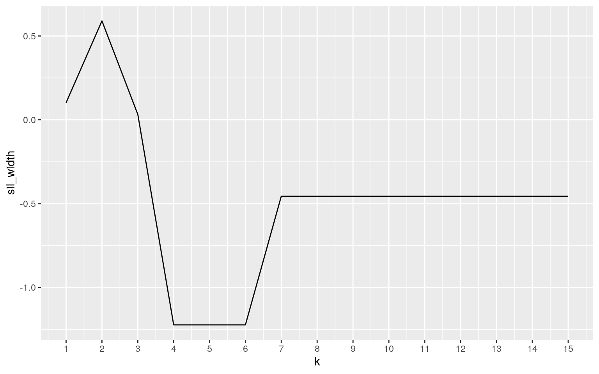
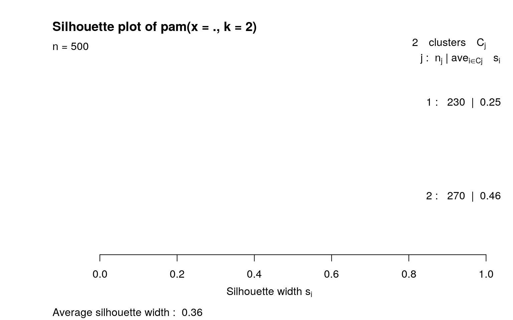
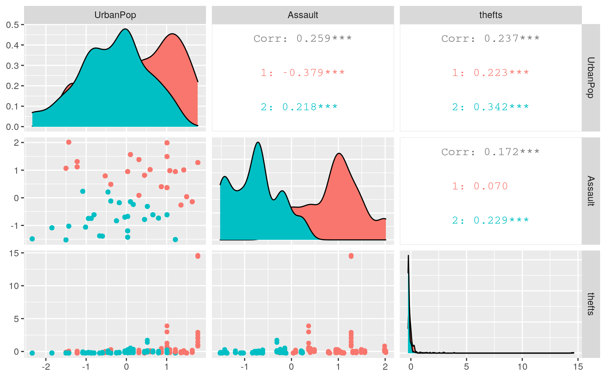

I have chosen two datasets that deal with different types of crime across the United States in 2 different time periods. One dataset (USArrests) looks at arrest statistics for violent crimes across all 50 states in 1973 under the variables "Murder", "Assault", and "Rape", along with the "UrbanPop" statistic that calculates the percent of the population of said state being primarily urban. State name was given as a label for the Y axis and not as its own categorical variable, so I made name of state its own variable ("state"). This data was taken from the McNeil monograph and is pre-installed in R. The second dataset was taken from the website "Dataworld" and uses data taken from the National Inurance Crime Bureau's annual "Hot Wheels" report that shows that 10 most stolen vehicles by state, including Washington D.C. We have 2 categorical variables in "state" and "make_model", which is the model of the car; we also have the rank (1-10) of each car ("rank"), the model year for each vehicle ("model_year"), and the number of thefts of that car that year ("thefts"). These datasets interested me because I wanted to see if states that had a history of violent crime would also have a proclivity towards other types of crime. Specifically, I am interested in seeing if the states that were historically more violent kept up with the levels of crime and have more car thefts than states that were historically less violent.
library(tidyverse)
car_thefts <- read_csv("car_thefts.csv")
data("USArrests")
Arrests <- USArrests %>% mutate(state = state.name)
glimpse(Arrests)## Rows: 50
## Columns: 5
## $ Murder <dbl> 13.2, 10.0, 8.1, 8.8, 9.0, 7.9, 3.3, 5.9, 15.4, 17.4, 5.3, 2…
## $ Assault <int> 236, 263, 294, 190, 276, 204, 110, 238, 335, 211, 46, 120, 2…
## $ UrbanPop <int> 58, 48, 80, 50, 91, 78, 77, 72, 80, 60, 83, 54, 83, 65, 57, …
## $ Rape <dbl> 21.2, 44.5, 31.0, 19.5, 40.6, 38.7, 11.1, 15.8, 31.9, 25.8, …
## $ state <chr> "Alabama", "Alaska", "Arizona", "Arkansas", "California", "C…glimpse(car_thefts)## Rows: 510
## Columns: 5
## $ state <chr> "Alabama", "Alabama", "Alabama", "Alabama", "Alabama", "Al…
## $ rank <dbl> 1, 2, 3, 4, 4, 5, 6, 7, 8, 9, 1, 2, 3, 4, 5, 6, 7, 8, 9, 1…
## $ make_model <chr> "Chevrolet Pickup (Full Size)", "Ford Pickup (Full Size)",…
## $ model_year <dbl> 2005, 2006, 2014, 2014, 2004, 1998, 1999, 1998, 2002, 2002…
## $ thefts <dbl> 499, 357, 205, 191, 191, 180, 152, 138, 122, 119, 147, 95,…head(car_thefts)## # A tibble: 6 x 5
## state rank make_model model_year thefts
## <chr> <dbl> <chr> <dbl> <dbl>
## 1 Alabama 1 Chevrolet Pickup (Full Size) 2005 499
## 2 Alabama 2 Ford Pickup (Full Size) 2006 357
## 3 Alabama 3 Toyota Camry 2014 205
## 4 Alabama 4 Nissan Altima 2014 191
## 5 Alabama 4 Chevrolet Impala 2004 191
## 6 Alabama 5 Honda Accord 1998 180head(Arrests)## Murder Assault UrbanPop Rape state
## 1 13.2 236 58 21.2 Alabama
## 2 10.0 263 48 44.5 Alaska
## 3 8.1 294 80 31.0 Arizona
## 4 8.8 190 50 19.5 Arkansas
## 5 9.0 276 91 40.6 California
## 6 7.9 204 78 38.7 ColoradoBoth datasets were already tidy, so I waited until after the descriptive statistics were obtained before using pivot_wider to spread out the data to be able to see the values broken down in a wider table format from the original categorical variable that they were grouped by.
I decided to join both datasets using a full join, joining on the variable "state". Both datasets are looking at different types of crime by states, with the only difference being that the car_thefts dataset also looked at statistics for Washington D.C. The decision to do a full join was due wanting to see a comprehensive breakdown of these statistics by each state. I am not looking exclusively at the crime trends of one over the other and instead and interested in seeing if a pattern is developing, which to me is visualized better using a full join. A new dataset called joined_data was made by piping the Arrests data set into a full join with car_thefts. Considering that there were more observations in the car_thefts dataset, the data from the Arrests data was duplicated for each of the different observations. Using the summarize function and looking at distinct entries for each numeric column, I was able to see all of the entries in eahc of our numeric variables. Some issues may appear, specifically in the joining variable with Washinton D.C. not being present in the Arrests dataset, thus creating NA's in my joined dataset for all of the variables imported from the Arrests dataset.
joined_data <- Arrests %>% full_join(car_thefts)
glimpse(joined_data)## Rows: 510
## Columns: 9
## $ Murder <dbl> 13.2, 13.2, 13.2, 13.2, 13.2, 13.2, 13.2, 13.2, 13.2, 13.2…
## $ Assault <int> 236, 236, 236, 236, 236, 236, 236, 236, 236, 236, 263, 263…
## $ UrbanPop <int> 58, 58, 58, 58, 58, 58, 58, 58, 58, 58, 48, 48, 48, 48, 48…
## $ Rape <dbl> 21.2, 21.2, 21.2, 21.2, 21.2, 21.2, 21.2, 21.2, 21.2, 21.2…
## $ state <chr> "Alabama", "Alabama", "Alabama", "Alabama", "Alabama", "Al…
## $ rank <dbl> 1, 2, 3, 4, 4, 5, 6, 7, 8, 9, 1, 2, 3, 4, 5, 6, 7, 8, 9, 1…
## $ make_model <chr> "Chevrolet Pickup (Full Size)", "Ford Pickup (Full Size)",…
## $ model_year <dbl> 2005, 2006, 2014, 2014, 2004, 1998, 1999, 1998, 2002, 2002…
## $ thefts <dbl> 499, 357, 205, 191, 191, 180, 152, 138, 122, 119, 147, 95,…joined_data %>% summarize_all(n_distinct)## Murder Assault UrbanPop Rape state rank make_model model_year thefts
## 1 44 46 37 49 51 10 48 27 344joined_data %>% summarize_if(is.numeric, n_distinct, na.rm = T)## Murder Assault UrbanPop Rape rank model_year thefts
## 1 43 45 36 48 10 27 344There were a couple of different statistics than I ran out of my own curiosity to see if there was actually correlation between historically violent areas and modern crimme. I first examined the average arrests for murder, assault, rape and number of car thefts in areas that historically had an urban population greater than 50, were in the top 5 of car thefts, and were newer car models. Under these conditions, there were high numbers of arrests historically and a very high number of car thefts. Looking just at Texas, I wanted to see the percent difference in thefts between each rank value. This data was then spread out using pivot_wider to see these values more appropriately. We saw greater differences in thefts between ranks 3 and 4, and 2 and 3 than we do in the rest of the table. When grouping by 2 categorical variables (state and make_model), we are able to see the average thefts per the 48 different types of vehicle models reported spread out throughout the different states alphabetically. The largest chunk that gave me many different types of summary statistics was done in an attempt to see if there were any similarities between the data that had the more historically violent areas and modern day rates of car theft. The data was grouped by state. A new variable that served as a proportion of thefts per percentage of urban population was calculated and its variance was taken, along with the mean, standard deviation, and standard error. Total car thefts per state was also calculated to see the aggregate of the different ranks and car models. The minimum and maximum model year for cars stolen per state was also calculated and show in the table below, along with the distinct number of car models and the average number of thefts per state. All of this data is presented in the table below and starts to indicate that there is not a large correlation between historically violent areas and modern day crime. This is further confirmed and presented in the correlation matrix between all of my numeric variables and is expanded upon in the correlation heat map.
joined_data %>% filter(UrbanPop >= 50, rank <= 5, model_year >=
2010) %>% arrange(desc(rank), model_year) %>% select(Murder,
Assault, Rape, thefts) %>% summarize_all(mean)## Murder Assault Rape thefts
## 1 9.729167 206.7917 22.45417 383.0833joined_data %>% filter(state == "Texas") %>% group_by(state) %>%
arrange(desc(rank)) %>% mutate(rank_diff = (thefts - lag(thefts))/lag(thefts)) %>%
pivot_wider(names_from = state, values_from = rank_diff)## # A tibble: 10 x 9
## Murder Assault UrbanPop Rape rank make_model model_year thefts Texas
## <dbl> <int> <int> <dbl> <dbl> <chr> <dbl> <dbl> <dbl>
## 1 12.7 201 80 25.5 10 Chevrolet Impa… 2007 898 NA
## 2 12.7 201 80 25.5 9 Nissan Altima 2012 957 0.0657
## 3 12.7 201 80 25.5 8 Toyota Camry 2014 1030 0.0763
## 4 12.7 201 80 25.5 7 Chevrolet Tahoe 2004 1148 0.115
## 5 12.7 201 80 25.5 6 Honda Civic 2000 1371 0.194
## 6 12.7 201 80 25.5 5 GMC Pickup (Fu… 2015 1450 0.0576
## 7 12.7 201 80 25.5 4 Honda Accord 1997 1626 0.121
## 8 12.7 201 80 25.5 3 Dodge Pickup (… 2004 2898 0.782
## 9 12.7 201 80 25.5 2 Chevrolet Pick… 2004 6158 1.12
## 10 12.7 201 80 25.5 1 Ford Pickup (F… 2006 7897 0.282joined_data %>% group_by(state) %>% mutate(thefts_per_urbanpop = thefts/UrbanPop) %>%
summarize(mean_murder = mean(Murder, na.rm = T), sd_murder = sd(Murder,
na.rm = T), n = n(), se_murder = sd_murder/sqrt(n), mean_rape = mean(Rape,
na.rm = T), sd_rape = sd(Rape, na.rm = T), se_rape = sd_rape/sqrt(n),
mean_assault = mean(Assault, na.rm = T), sd_assault = sd(Assault,
na.rm = T), se_assault = sd_assault/sqrt(n), total_thefts = sum(thefts),
n_cars = n_distinct(make_model), min_model_year = min(model_year),
max_model_year = max(model_year), mean_car_thefts = mean(thefts,
na.rm = T), var_thefts = var(thefts_per_urbanpop))## # A tibble: 51 x 17
## state mean_murder sd_murder n se_murder mean_rape sd_rape se_rape
## <chr> <dbl> <dbl> <int> <dbl> <dbl> <dbl> <dbl>
## 1 Alab… 13.2 0 10 0 21.2 0 0
## 2 Alas… 10 0 10 0 44.5 0 0
## 3 Ariz… 8.1 0 10 0 31 0 0
## 4 Arka… 8.8 0 10 0 19.5 0 0
## 5 Cali… 9 0 10 0 40.6 0 0
## 6 Colo… 7.9 0 10 0 38.7 0 0
## 7 Conn… 3.3 0 10 0 11.1 0 0
## 8 Dela… 5.9 0 10 0 15.8 0 0
## 9 Dist… NaN NA 10 NA NaN NA NA
## 10 Flor… 15.4 0 10 0 31.9 0 0
## # … with 41 more rows, and 9 more variables: mean_assault <dbl>,
## # sd_assault <dbl>, se_assault <dbl>, total_thefts <dbl>, n_cars <int>,
## # min_model_year <dbl>, max_model_year <dbl>, mean_car_thefts <dbl>,
## # var_thefts <dbl>joined_data %>% group_by(state, make_model) %>% summarize(mean_car_thefts = mean(thefts,
na.rm = T)) %>% na.omit() %>% pivot_wider(names_from = state,
values_from = mean_car_thefts)## # A tibble: 48 x 52
## make_model Alabama Alaska Arizona Arkansas California Colorado Connecticut
## <chr> <dbl> <dbl> <dbl> <dbl> <dbl> <dbl> <dbl>
## 1 Chevrolet… 191 NA NA 76 NA NA NA
## 2 Chevrolet… 499 147 850 402 6048 450 NA
## 3 Dodge Pic… 138 44 428 127 NA 308 NA
## 4 Ford Expl… 119 31 NA NA NA NA NA
## 5 Ford Must… 122 NA NA NA NA NA NA
## 6 Ford Pick… 357 95 772 252 4504 595 NA
## 7 GMC Picku… 152 58 246 174 NA NA NA
## 8 Honda Acc… 180 46 1072 122 28345 1167 534
## 9 Nissan Al… 191 NA 269 89 2281 NA 143
## 10 Toyota Ca… 205 NA 210 82 5345 203 131
## # … with 38 more rows, and 44 more variables: Delaware <dbl>, `District Of
## # Columbia` <dbl>, Florida <dbl>, Georgia <dbl>, Hawaii <dbl>, Idaho <dbl>,
## # Illinois <dbl>, Indiana <dbl>, Iowa <dbl>, Kansas <dbl>, Kentucky <dbl>,
## # Louisiana <dbl>, Maine <dbl>, Maryland <dbl>, Massachusetts <dbl>,
## # Michigan <dbl>, Minnesota <dbl>, Mississippi <dbl>, Missouri <dbl>,
## # Montana <dbl>, Nebraska <dbl>, Nevada <dbl>, `New Hampshire` <dbl>, `New
## # Jersey` <dbl>, `New Mexico` <dbl>, `New York` <dbl>, `North
## # Carolina` <dbl>, `North Dakota` <dbl>, Ohio <dbl>, Oklahoma <dbl>,
## # Oregon <dbl>, Pennsylvania <dbl>, `Rhode Island` <dbl>, `South
## # Carolina` <dbl>, `South Dakota` <dbl>, Tennessee <dbl>, Texas <dbl>,
## # Utah <dbl>, Vermont <dbl>, Virginia <dbl>, Washington <dbl>, `West
## # Virginia` <dbl>, Wisconsin <dbl>, Wyoming <dbl>cormat <- joined_data %>% select_if(is.numeric) %>% cor(use = "pair")
cormat## Murder Assault UrbanPop Rape rank model_year
## Murder 1.00000000 0.80187331 0.06957262 0.56357883 0.03567743 0.26186334
## Assault 0.80187331 1.00000000 0.25887170 0.66524123 0.04000528 0.21807968
## UrbanPop 0.06957262 0.25887170 1.00000000 0.41134124 0.06220221 0.04070706
## Rape 0.56357883 0.66524123 0.41134124 1.00000000 0.04524286 0.01570699
## rank 0.03567743 0.04000528 0.06220221 0.04524286 1.00000000 0.16804399
## model_year 0.26186334 0.21807968 0.04070706 0.01570699 0.16804399 1.00000000
## thefts 0.09768232 0.17177789 0.23746954 0.25800646 -0.16513784 -0.06985549
## thefts
## Murder 0.09768232
## Assault 0.17177789
## UrbanPop 0.23746954
## Rape 0.25800646
## rank -0.16513784
## model_year -0.06985549
## thefts 1.00000000The correlation heat map below show that there is very little correlation across the board between our numerical values. There is a slight indication of correlation between the arrests of for murder, rape and assault with each other, but the percent of urban population does not seem to be an indicator of of these crimes, nor does it impact future rates of car theft. This is further exanded upon with my subsequent graphs. I attempted to map using a linear regression the historically violent assaults, using murder arrests as my x axis and mapping using size of the points to indicate rape arrests, to the number of car thefts in 2015 along with coloring by assault arrests. I tried faceting by state, but the graphs were incredibly difficult to read. They will be provided below, but the data is easier to read without them. There is no clear cut indication of a correlation between the older assault arrests and the new car thefts. Lastly, I attempted to show what difference in overall thefts of cars really is between the different ranks using a bar graph that was colored using the different states. Error bars were also provided. This shows a massive difference in the overall number of thefts between the first and second ranks of car stolen and the subsequent 8. This is shown below.
cormat[lower.tri(cormat)] <- NA
cormat %>% as.data.frame %>% rownames_to_column %>% pivot_longer(-1) %>%
na.omit %>% ggplot(aes(rowname, name, fill = value)) + geom_tile() +
geom_text(aes(label = round(value, 2))) + xlab("") + ylab("") +
coord_fixed() + scale_fill_gradient2(low = "light green",
mid = "orange", high = "yellow")
ggplot(joined_data, aes(x = Murder, y = thefts, color = Assault,
size = Rape)) + geom_line(aes(group = Assault)) + geom_point(size = 4,
color = "black") + theme(legend.position = "none") + ggtitle("Car Thefts Compared to Historically Violent Areas") +
xlab("Murder Arrests in 1973") + ylab("Total Car Thefts in 2015")
ggplot(joined_data, aes(x = Murder, y = thefts, color = Assault,
size = Rape)) + geom_line(aes(group = Assault)) + geom_point(size = 4,
color = "black") + theme(legend.position = "none") + ggtitle("Car Thefts Compared to Historically Violent Areas") +
xlab("Murder Arrests in 1973") + ylab("Total Car Thefts in 2015") +
facet_wrap(~state)
ggplot(joined_data, aes(x = rank, y = thefts, fill = state)) +
geom_bar(stat = "summary", fun = mean) + scale_fill_brewer(palette = "primary.colors") +
geom_errorbar(stat = "summary", fun.data = mean_se, width = 0.5) +
scale_y_continuous(name = "Car Thefts") + theme(legend.position = "none") +
scale_x_continuous(name = "Car Rank", breaks = seq(1, 10,
1)) + scale_y_continuous(name = "Car Thefts", breaks = seq(10000,
80000, 10000))
A final test to see if there was a relationship between the two datasets was done checking to see if there was a correlation between the historical percentage of urban population and assault arrests with future car thefts. First, our cluster data scaled and set with only these three variables in mind. NA's were also removed. A test to determine the best number of clusters was done using the silhouette width. The graph showed that 2 clusters was the optimum amount, however we see that the average silhouette width has a value of 0.363, which indicates that there is a weak relationship in the structure and that it may be artificial. This is further solidified when using the ggpairs to demonstrate the low correlation between all 3 of these numeric variables. The accompanying graphs do not indicate a clear cut relationship between these values. Analyzing all of the data from this project, it highly suggests that the historical record of violent assaults in urban areas does not impact the more modern day rates of future crimes such as car thefts, despite my hypothesis of areas with historically more violent crime arrests being more predisposed to other forms of crime like car thefts nationwide.
library(cluster)
library(GGally)
clustdat <- joined_data %>% select(UrbanPop, Assault, thefts) %>%
na.omit %>% scale %>% as.data.frame
sil_width <- vector()
for (i in 1:15) {
pam_fit <- pam(clustdat, k = i)
sil_width[i] <- pam_fit$medoids
}
ggplot() + geom_line(aes(x = 1:15, y = sil_width)) + scale_x_continuous(name = "k",
breaks = 1:15)
pam1 <- clustdat %>% pam(2)
pam1$silinfo$avg.width## [1] 0.3636694plot(pam1, which = 2)
final <- clustdat <- joined_data %>% select(UrbanPop, Assault,
thefts) %>% na.omit() %>% scale %>% as.data.frame
pam2 <- final %>% pam(2)
final <- final %>% mutate(cluster = as.factor(pam2$clustering))
ggpairs(final, columns = 1:3, aes(color = cluster))
data(package = .packages(all.available = TRUE))...